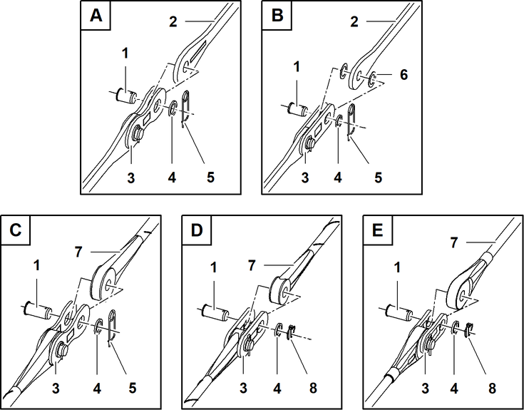

Nadelausleger-Haltestangen A-Bock3 zu Nadelausleger-Kopf verbolzen
Die Anzahl der Transporthalterungen pro Stahl-Haltestange 4 oder CFK-Haltestange 1 variiert je nach Konfiguration.
Sicherungsfedern 5 entfernen. |
Sicherungselemente 6 entfernen. |
Stahl-Haltestangen 4 sind entsichert. |
Gurt 3 lösen. |
CFK-Haltestangen 1 sind entsichert. |
Vorgang bei allen Nadelausleger-Komponenten wiederholen. |

Fig. 5525: Nadelausleger-Haltestangen verbolzen (Schematische Darstellung verschiedener Haltestangen)
Fig. 5525: Nadelausleger-Haltestangen verbolzen (Schematische Darstellung verschiedener Haltestangen)
Bolzen | |
Stahl-Haltestange | |
Koppellasche (2x) | |
Scheibe | |
Sicherungsfeder | |
Kunststoffscheibe (2x) | |
CFK-Haltestange | |
Klappstecker | |
Stahl-Haltestange ohne Kunststoffscheiben | |
Stahl-Haltestange mit Kunststoffscheiben | |
CFK-Haltestange der Generation A mit Sicherungsfeder | |
CFK-Haltestange der Generation A mit Klappstecker | |
CFK-Haltestange der Generation B mit Klappstecker |
Bolzen 1 entfernen. |
Stahl-Haltestange 2 oder CFK-Haltestange 7 zwischen beiden Koppellaschen 3 positionieren. |
Wenn Kunststoffscheiben 4 vorhanden sind: | |
Kunststoffscheiben 4 zwischen Stahl-Haltestange 2 und Koppellaschen 3 positionieren. | |
Stahl-Haltestange 2 oder CFK-Haltestange 7 ist positioniert. |
Wenn Sicherungsfeder 5 vorhanden ist: | |
Bolzen 1 einsetzen und mit Scheiben 4 und Sicherungsfeder 5 sichern. | |
Stahl-Haltestange 2 oder CFK-Haltestange 7 ist gesichert. |
Wenn Klappstecker 8 vorhanden ist: | |
Bolzen 1 einsetzen und mit Scheiben 4 und Klappstecker 8 sichern. | |
Stahl-Haltestange 2 oder CFK-Haltestange 7 ist gesichert. |
Vorgang für alle Nadelausleger-Haltestangen A-Bock3 zu Nadelausleger-Kopf wiederholen. |